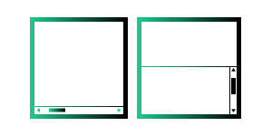
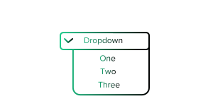
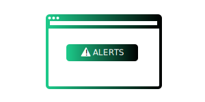
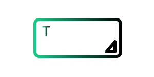

Frames
A frame is a part of a web page or browser window which displays content independent.
Try it

Dropdown
The HTML select element represents a control that provides a menu of options.
Try it
Tables and Links
Tables research and data analysis.
Try it

Alerts
An alert box is often used if you want to make sure information comes through the user.
Try it
Calenders
The date defines a date picker.
The resulting value includes the year, month, and day.
Try it
Sliders
Range sliders configure your values.
Try it

Textarea
The HTML is used to define a multi-line text input control. The size of the HTML textarea is defined by column
and row attribute.
Try it